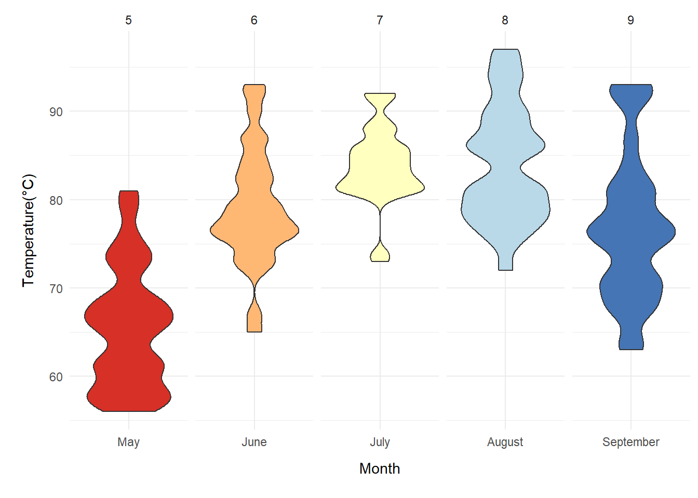

# gives us ggplot2, dplyr, readr, tibble etcif(!require("tidyverse"))install.packages("tidyverse")library(tidyverse)# interactive plotsif(!require("plotly"))install.packages("plotly")library(plotly)# support for color blind users - see scale_color_colorblind() belowif(!require("ggthemes"))install.packages("ggthemes")library(ggthemes)# allows paginated tablesif(!require("DT"))install.packages("DT")library(DT)
Quarto Web Pages Overview
This example illustrates some useful functionality within Quarto. To run this project click on “Render Website” in the Build window on the top RHS of the R Studio IDE, as shown in Figure 1.
It’s important to remember that we do not need to specify all the options in the OPML header above. They are included purely for demonstration purposes. Minimally, we could just give the document a title and leave it at that!
When you’re setting a value in the OPML header above hit the TAB key after the colon and that will bring up the menu of possible choices for a particular field, as shown in Figure 2.
Figure 2: Press TAB to show field options
However, do not forget to leave a SPACE after the colon for each field. For more information on adding images/figures see this link.
Cross References
Cross-references make it easier for readers to navigate your document by providing numbered references and hyperlinks to various entities like figures and tables.
Some Examples
Figure 3 explores the temperature from May 2023 to September 2023.
Code
# month names for x-axismonth.names <-c("May", "June", "July", "August", "September")# this was generated using esquisseggplot(airquality) +aes(x =factor(Month, labels = month.names), y = Temp, fill = Month) +geom_violin(adjust =0.4, scale ="area") +scale_fill_distiller(palette ="RdYlBu", direction =1) +labs(x ="Month",y ="Temperature(°C)",fill ="Month" ) +theme_minimal() +theme(legend.position ="none",axis.title.x =element_text(margin =margin(t =10, b =10)), # Adjust X axis titleaxis.title.y =element_text(margin =margin(r =10, l =10)) # Adjust Y axis title ) +facet_wrap(vars(Month),scales ="free_x",ncol =5L,nrow =1L )

Figure 3: Temperature (Jan - June 2023).
We can add plots with multiple plot components (e.g. a, b,…) as shown in Figure 4
Code
ggplot(airquality, aes(Temp, Ozone)) +geom_point() +geom_smooth(method ="loess") +labs(x ="Temperature(°C)",y ="Ozone" ) +theme_minimal() +theme(axis.title.x =element_text(margin =margin(t =10, b =10)), # Adjust X axis titleaxis.title.y =element_text(margin =margin(r =10, l =10)) # Adjust Y axis title ) ggplot(airquality, aes(Wind, Temp)) +geom_point() +geom_smooth(method ="loess") +labs(x ="Wind (kmph)",y ="Temperature(°C)" ) +theme_minimal() +theme(axis.title.x =element_text(margin =margin(t =10, b =10)), # Adjust X axis titleaxis.title.y =element_text(margin =margin(r =10, l =10)) # Adjust Y axis title )
(a) A subcaption for plot 1
(b) A subcaption for plot 2
Figure 4: Temperature, Wind, and Ozone level.
Notice that we can add annotations in the R chunk (i.e. the grey sections that contains R code) to do things like set caption, subcaption, width, dpi, aspect ratio, etc. We can learn more about Figures here.
Table 1 presents the first rows of the airquality dataset using the kable library that comes with the tidyverse package ….
Code
# show the first 8 rowsknitr::kable(head(airquality, 8))
Table 1: Air Quality Heads
Ozone
Solar.R
Wind
Temp
Month
Day
41
190
7.4
67
5
1
36
118
8.0
72
5
2
12
149
12.6
74
5
3
18
313
11.5
62
5
4
NA
NA
14.3
56
5
5
28
NA
14.9
66
5
6
23
299
8.6
65
5
7
19
99
13.8
59
5
8
We can also do override the settings in the OPML header above and turn source code off with echo set to false, turn off warnings, and disable caching for a specific chunk of code.
# show the first 5 rows + paginationDT::datatable(airquality, options =list(pageLength =5))
Table 2: Air Quality Tails
Finally, notice also how the table and figure numbers are automatically set by Quarto. If we re-arrange these elements then the numbers will update automatically.
Footnotes
Quarto will use Pandoc to automatically generate footnotes in a number of styles.
Some Examples
When considering the impact of Sea surface temperature1 on Ozone2 level…